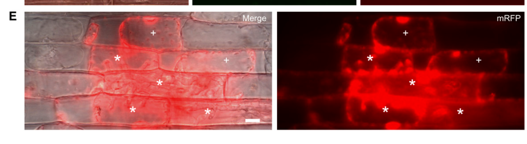

BAS1 (Biotrophy-associated secreted protein 1, MGG_04795) is a small (115 aa), cysteine-free secreted protein of the rice blast fungus Magnaporthe oryzae (Pyricularia oryzae) with no recognizable domains, paralogs or orthologs. Its gene is among the most strongly induced in biotrophic invasive hyphae inside living rice cells. BAS1 is a cytoplasmic effector: it is secreted by invasive hyphae through a Brefeldin A-insensitive, exocyst- and Sso1 t-SNARE-dependent route into the biotrophic interfacial complex (BIC), a plant membrane-rich structure lying outside the fungal plasma membrane, and is then translocated into the cytoplasm of the invaded rice cell, a step that is blocked by inhibitors of host clathrin-mediated endocytosis. Fluorescent BAS1 also moves from invaded cells into uninvaded neighbouring rice cells. Accumulation is characteristic of compatible interactions. Its biochemical activity and host targets are unknown; BAS1 deletion mutants show at most minor, inconsistent reductions in lesion number and size. BAS1 fluorescent fusions are widely used as a reporter of BIC-directed effector secretion and translocation.
| GO Term | Evidence | Action | Reason |
|---|---|---|---|
|
GO:0005576
extracellular region
|
EXP
PMID:19357089 Interaction transcriptome analysis identifies Magnaporthe or... |
ACCEPT |
Summary: Mosquera et al. (2009) showed by live-cell imaging that BAS1:EYFP is secreted by invasive hyphae into biotrophic interfacial complexes (BICs), failing to colocalize with a fungal cytoplasmic marker but colocalizing with the BIC effector AVR-Pita1. Giraldo et al. (2013) showed the BIC lies outside the fungal plasma membrane.
Reason: Direct imaging evidence of secretion out of the fungal cell. The BIC is a transit compartment on the way to the host cytoplasm, so this is a correct but non-terminal location; no GO cellular component term exists for the BIC, and extracellular region is the appropriate available term.
Supporting Evidence:
PMID:19357089
Therefore, BAS1 encodes a small unique protein that is secreted into BICs.
PMID:23774898
confirming that the BIC lies outside the fungal plasma membrane
|
|
GO:0005576
extracellular region
|
IEA
GO_REF:0000044 |
ACCEPT |
Summary: Electronic mapping from the UniProt subcellular location "Secreted", which is itself experimentally supported by Mosquera et al. (2009).
Reason: Correct mapping, consistent with the experimental annotation of BIC-directed secretion.
Supporting Evidence:
PMID:19357089
Therefore, BAS1 encodes a small unique protein that is secreted into BICs.
|
|
GO:0030430
host cell cytoplasm
|
EXP
PMID:19357089 Interaction transcriptome analysis identifies Magnaporthe or... |
ACCEPT |
Summary: Mosquera et al. (2009) report that fluorescently labeled BAS proteins are secreted into rice cells and that BAS1 accumulates in BICs. In the full text, entry of BAS1 into the host cytoplasm is discussed as a possibility (BAS1 could be a structural BIC component or a translocated effector), with translocation cited as preliminary unpublished data; it was demonstrated directly in the follow-up study (Khang et al. 2010).
Reason: The location is correct for BAS1 and is the core site of action of this cytoplasmic effector. The direct demonstration of translocation is in PMID:20435900 rather than this paper, which primarily documents BIC accumulation; the abstract statement that BAS proteins were secreted into rice cells supports the curator's reading, and the annotation is retained.
Supporting Evidence:
PMID:19357089
Fluorescently labeled BAS proteins were secreted into rice cells in distinct patterns in compatible, but not in incompatible, interactions.
PMID:19357089
BAS1 and BAS2 might represent structural BIC components, or they might represent candidate effectors that are translocated across the EIHM into the rice cell.
PMID:20435900
were translocated into the rice cytoplasm
|
|
GO:0030430
host cell cytoplasm
|
EXP
PMID:20435900 Translocation of Magnaporthe oryzae effectors into rice cell... |
ACCEPT |
Summary: Khang et al. (2010) showed by live-cell imaging that BIC-localized BAS1 (like PWL2) is translocated into the cytoplasm of invaded rice cells and moves on into uninvaded neighbouring cells, whereas the interfacial protein BAS4 is not translocated. Translocation is blocked by clathrin-heavy-chain inhibitors (Oliveira-Garcia and Hamilton 2024).
Reason: Direct experimental evidence; host cell cytoplasm is the core destination of this cytoplasmic effector.
Supporting Evidence:
PMID:20435900
were translocated into the rice cytoplasm
PMID:20435900
and BAS1 proteins that reached the rice cytoplasm moved into uninvaded
PMID:38722963
fluorescently labeled effectors Bas1 and Pwl2 in rice cells, leading to swollen
|
|
GO:0030430
host cell cytoplasm
|
IEA
GO_REF:0000044 |
ACCEPT |
Summary: Electronic mapping from the UniProt subcellular location "Host cytoplasm", experimentally supported by Khang et al. (2010).
Reason: Correct mapping, consistent with the experimental annotations.
Supporting Evidence:
PMID:20435900
were translocated into the rice cytoplasm
|
Q: What rice proteins does BAS1 bind once in the host cytoplasm, and does BAS1 alter host immunity or cellular processes? Reports that purified recombinant BAS1 induces callose and ROS while overexpression increases virulence (PMID:29551940) need independent confirmation with native-level expression.
Q: GO has no cellular component term for the biotrophic interfacial complex (BIC), a plant-derived interface structure that defines the cytoplasmic-effector class in M. oryzae. Should a host-cell interface term be requested so that BIC-localized effectors (BAS1, PWL2, AVR-Pita) can be distinguished from apoplastic effectors (BAS4, Slp1)?
Experiment: Identify host interactors of BAS1 by co-immunoprecipitation/mass spectrometry from infected rice tissue or yeast two-hybrid screening against an infected-sheath cDNA library, followed by in planta validation.
Experiment: Test bas1 deletion mutants in combination with other BIC effectors (to address redundancy), with complementation, using quantitative invasive-growth assays rather than lesion counts.
The research report should be a detailed narrative explaining the function, biological processes, and localization of the gene product. Citations should be given for all claims.
You should prioritize authoritative reviews and primary scientific literature when conducting research. You can supplement
this with annotations you find in gene/protein databases, but these can be outdated or inaccurate.
We are specifically interested in the primary function of the gene - for enzymes, what reaction is catalyzed, and what is the substrate specificity? For transporters, what is the substrate? For structural proteins or adapters, what is the broader structural role? For signaling molecules, what is the role in the pathway.
We are interested in where in or outside the cell the gene product carries out its function.
We are also interested in the signaling or biochemical pathways in which the gene functions. We are less interested in broad pleiotropic effects, except where these elucidate the precise role.
Include evidence where possible. We are interested in both experimental evidence as well as inference from structure, evolution, or bioinformatic analysis. Precise studies should be prioritized over high-throughput, where available.
The target is fungal BAS1, not a plant gene of the same name. The supplied UniProt record identifies G5EHI7 as biotrophy-associated secreted protein 1 from Pyricularia oryzae strain 70-15, also called Magnaporthe oryzae. An independent fungal localization study explicitly identifies MGG_04795p as Bas1p, confirming the locus-to-protein match. This report does not transfer functions from plant BAS1 or from the distinct fungal proteins BAS2, BAS3 and BAS4. (gong2015pfplvectorsfor pages 40-42)
Best-supported primary annotation: BAS1 encodes a small, infection-associated secreted cytoplasmic effector. Here, “cytoplasmic” describes its destination in the rice host cell, not an exclusively fungal-cytoplasmic protein: tagged BAS1 concentrates at the biotrophic interfacial complex (BIC) during invasive growth, enters invaded rice-cell cytoplasm and can appear in neighboring cells before fungal hyphae reach them. Its specific biochemical activity and host target remain unknown. A published effector survey lists BAS1 as 115 amino acids long but assigns no conserved functional domain or established virulence mechanism; the UniProt information supplied likewise specifies no protein family or key domain. (khang2010translocationofmagnaporthe pages 8-9, khang2010translocationofmagnaporthe pages 1-2, selin2016elucidatingtherole pages 4-5)
Rice-blast invasive hyphae grow inside initially living rice cells while separated from host cytoplasm by a plant-derived extra-invasive-hyphal membrane. The BIC is a localized, plant-membrane-associated interface where a subset of fungal proteins accumulates before host-cell delivery. BAS1 belongs to this BIC-associated class, unlike BAS4, which primarily outlines invasive hyphae in the interfacial compartment. Thus, the relevant sequence of locations is fungal invasive hypha → BIC at the fungus–rice interface → rice-cell cytoplasm → potentially adjacent, not-yet-invaded rice cells; BAS1 is not established as an apoplastic enzyme acting in the bulk extracellular space. (dulal2024pathsofleast pages 2-3, khang2010translocationofmagnaporthe pages 8-9, khang2010translocationofmagnaporthe pages 1-2)
The strongest BAS1-specific translocation experiment is Khang and colleagues’ live-cell imaging study, published April 2010. BAS1:mRFP was observed in the cytoplasm of invaded rice cells at 25 infection sites examined, and its fluorescence was also seen ahead of the fungus in uninvaded neighbors. Their Figure 5E shows infected and neighboring uninfected cells at 36 hours after inoculation. These observations demonstrate where the tagged protein travels, but do not identify what it binds or changes once inside the host. Movement through plasmodesmata is a plausible interpretation of intercellular trafficking, not a BAS1-specific proven transport mechanism. In particular, published quantitative distance and size-limit experiments primarily used PWL2 fusions and should not be reported as BAS1 measurements. BAS1-specific accumulation in host nuclei has not been established by these data. (khang2010translocationofmagnaporthe pages 8-9, khang2010translocationofmagnaporthe pages 9-11, khang2010translocationofmagnaporthe pages 12-13, khang2010translocationofmagnaporthe media 587ac2dc)
BAS1’s proposed contribution to the infection process is consequently host-cell manipulation during biotrophic invasion, potentially including preparation of cells for subsequent colonization. That is a functional hypothesis supported by timing and delivery, rather than proof that BAS1 suppresses a particular immune pathway, catalyzes a reaction, or is individually required for disease. No BAS1-specific substrate specificity, rice binding partner, receptor, catalytic reaction or causal signaling target was established in the evaluated studies. Likewise, the cited BAS1 localization and expression experiments do not constitute a BAS1 knockout-and-complementation demonstration of an individual virulence requirement. (khang2010translocationofmagnaporthe pages 1-2, khang2010translocationofmagnaporthe pages 12-13, wei2023recentadvancesin pages 10-11, selin2016elucidatingtherole pages 4-5)
Giraldo and colleagues’ primary study, published June 2013, places BAS1 in the BIC-directed cytoplasmic-effector secretion route rather than the conventional route used by apoplastic reporters. BAS1:mRFP still accumulated at the BIC after five hours of brefeldin A treatment, supporting a brefeldin-A-insensitive, Golgi-bypass route in this assay. Perturbing fungal exocyst components caused BAS1:mRFP retention inside invasive hyphae at 22/28 Δexo70 and 23/27 Δsec5 infection sites. In a Δsso1 t-SNARE mutant, 25/30 BAS1:mRFP-expressing invasive hyphae showed an abnormal two-focus, or “double-BIC,” distribution. Together, these are BAS1-specific evidence that Exo70, Sec5 and Sso1 contribute to efficient, correctly positioned secretion; they do not imply that BAS1 physically binds these trafficking proteins. (giraldo2013twodistinctsecretion pages 7-8, giraldo2013twodistinctsecretion pages 8-9, giraldo2013twodistinctsecretion pages 6-7)
A 2024 expert review integrates those secretion experiments into a broader model in which cytoplasmic effectors are directed to BICs by a Golgi-bypass route and subsequently enter host cells through processes involving plant clathrin-mediated endocytosis. The latter is a pathway-level model, not evidence that BAS1 itself was individually tested for clathrin-dependent uptake or that its host-cell target has been found. (dulal2024pathsofleast pages 2-3)
A 2023 review still describes Bas1 as a small BIC- and host-cytoplasm-associated protein, while distinguishing it from BAS2/BAS3 and the mainly interfacial BAS4. It provides no BAS1-specific enzymatic or host-target mechanism—an important indication of the continuing annotation gap. Fluorescent BAS1 remains useful experimentally as a reporter of BIC targeting and effector trafficking: a 2024-posted study visualized Bas1-GFP and Pwl2-mRFP as signals within the same BIC, but the host-binding and immune-suppression results of that study concern Pwl2, not BAS1. (were2025theblasteffector pages 3-5, wei2023recentadvancesin pages 10-11)
In primary research published January 2024, Martín-Cardoso and colleagues found by RT-qPCR that MoBAS1 transcript abundance was higher during approximately 32–40 hours after inoculation of high-phosphate than low-phosphate rice leaf sheaths. Their broader infection experiment also observed more frequent movement of fungal hyphae into adjacent cells by 48 hours under high phosphate—56.67% versus 22.76%—but that comparison does not isolate a causal role for BAS1. Critically, their fungal isolate was Guy11, not the 70-15 reference strain, and their live protein reporters were BAS4:GFP and PWL2:mCherry, not BAS1. The supported BAS1-specific conclusion is altered transcript expression, not demonstrated phosphate-dependent BAS1 secretion, localization or biochemical activity. (martincardoso2024phosphateaccumulationin pages 4-6, martincardoso2024phosphateaccumulationin pages 6-7, martincardoso2024phosphateaccumulationin pages 7-10)
An important implementation caveat comes from Gong and colleagues’ February 2015 reporter comparison. At 36 hours after inoculation, RFP-tagged Bas1p gave stronger BIC-associated signals with little autofluorescence, whereas CFP/GFP/YFP fusions were weak and YFP-channel host-cytoplasmic autofluorescence could confound interpretation. Accordingly, BAS1 host-delivery claims should rely on appropriately controlled imaging—such as the mRFP experiments—rather than treating every host-associated fluorescent signal as authentic BAS1. (gong2015pfplvectorsfor pages 40-42)
The following summary separates direct BAS1 findings from unresolved molecular function.
| Feature | BAS1-specific observation | Interpretation/limit | Source |
|---|---|---|---|
| Identity | Bas1p = MGG_04795p, matching fungal BAS1 / UniProt G5EHI7; fluorescent-protein fusions were expressed from the native locus promoter. | Confirms the target is the rice-blast fungal protein, not plant BAS1 or fungal BAS2–BAS4. | Gong et al. (2015), MPMI, published February 2015, doi:10.1094/MPMI-05-14-0144-TA (gong2015pfplvectorsfor pages 4-7, gong2015pfplvectorsfor pages 40-42) |
| Reporter caveat | CFP-, GFP-, and YFP-tagged Bas1p gave weak BIC signals; YFP also produced host-cytoplasmic and subcellular autofluorescence. RFP produced stronger BIC and primary-hypha-associated signals with little or no autofluorescence at 36 h post-inoculation. | Apparent YFP host localization is not reliable by itself; RFP/mRFP and appropriate untransformed controls provide stronger evidence. | Gong et al. (2015), MPMI, doi:10.1094/MPMI-05-14-0144-TA (gong2015pfplvectorsfor pages 40-42) |
| Infection localization and translocation | BAS1 accumulated in the biotrophic interfacial complex (BIC). BAS1:mRFP was detected in the cytoplasm of invaded rice cells at all 25 infection sites examined and had moved into neighboring cells lacking invasive hyphae; Figure 5E documents this pattern at 36 h after inoculation. | Strong live-cell evidence that tagged BAS1 is a BIC-associated cytoplasmic effector capable of host-cell entry and intercellular movement. It does not identify BAS1’s host target or prove what the native protein does after entry. | Khang et al. (2010), The Plant Cell, published April 2010, doi:10.1105/tpc.109.069666 (khang2010translocationofmagnaporthe pages 8-9, khang2010translocationofmagnaporthe pages 1-2, khang2010translocationofmagnaporthe media 587ac2dc) |
| Brefeldin-A response | BAS1:mRFP remained BIC-localized after 5 h of brefeldin-A treatment. | Supports a brefeldin-A-insensitive, Golgi-bypass route for BIC-directed secretion; this is a trafficking result, not evidence of BAS1 biochemical activity. | Giraldo et al. (2013), Nature Communications, published June 2013, doi:10.1038/ncomms2996 (giraldo2013twodistinctsecretion pages 6-7, giraldo2013twodistinctsecretion pages 4-6) |
| Exocyst dependence | Bas1:mRFP was retained inside invasive hyphae—mainly BIC-associated cells—in 22/28 Δexo70 and 23/27 Δsec5 infection sites; wild-type hyphae lacked this intracellular retention pattern. | Directly implicates Exo70 and Sec5 in efficient BAS1 secretion. Retention was incomplete, so these components facilitate rather than uniquely define the entire pathway. | Giraldo et al. (2013), Nature Communications, doi:10.1038/ncomms2996 (giraldo2013twodistinctsecretion pages 7-8) |
| t-SNARE dependence | In 25/30 Δsso1 invasive hyphae, Bas1:mRFP formed a “double-BIC” pattern—one normal focus and one ectopic focus associated with the primary hypha. | Sso1 is required for normal spatial targeting of BAS1 secretion; the phenotype does not establish direct physical binding between BAS1 and Sso1. | Giraldo et al. (2013), Nature Communications, doi:10.1038/ncomms2996 (giraldo2013twodistinctsecretion pages 9-10, giraldo2013twodistinctsecretion pages 8-9) |
| Environmental regulation | RT-qPCR found higher MoBAS1 expression in high-phosphate rice tissue at 32–40 h post-inoculation. | Evidence that host phosphate status modulates BAS1 expression during infection. Experiments used M. oryzae Guy11, not strain 70-15; live microscopy tracked BAS4:GFP and PWL2:mCherry, not BAS1 protein, so altered BAS1 localization or secretion was not demonstrated. | Martín-Cardoso et al. (2024), Frontiers in Plant Science, published January 2024, doi:10.3389/fpls.2023.1330349 (martincardoso2024phosphateaccumulationin pages 4-6, martincardoso2024phosphateaccumulationin pages 6-7, martincardoso2024phosphateaccumulationin pages 7-10) |
| Primary molecular function | No BAS1-specific host binding partner, catalytic reaction, substrate specificity, conserved catalytic domain, or demonstrated signaling target was identified in the evaluated literature. No BAS1 deletion/complementation result establishing an individual virulence requirement was found. | The defensible annotation is infection-induced, BIC-delivered cytoplasmic effector of unknown molecular activity. A generic role in immune suppression or susceptibility induction remains a hypothesis, not a BAS1-specific demonstrated mechanism. | Selin et al. (2016), Frontiers in Microbiology, published April 2016, doi:10.3389/fmicb.2016.00600; Wei et al. (2023), Biomolecules, published November 2023, doi:10.3390/biom13111650 (wei2023recentadvancesin pages 10-11, selin2016elucidatingtherole pages 4-5) |
Table: Evidence-grading table restricted to fungal BAS1 (MGG_04795/G5EHI7). It separates direct BAS1 observations from pathway-level inference and unresolved molecular function.
For G5EHI7/MGG_04795, the most defensible functional annotation is: infection-associated secreted protein delivered through the BIC into rice-cell cytoplasm, with observed movement of a fluorescent fusion into neighboring cells; molecular activity unknown. It should not be annotated as a brassinosteroid-metabolizing plant BAS1, as an enzyme with a known substrate, or as a proven suppressor of a named rice immune pathway. The founding discovery paper is Mosquera et al., April 2009, The Plant Cell, DOI: 10.1105/tpc.107.055228; its full text was unavailable in this retrieval, so the experimentally detailed conclusions above rest principally on accessible subsequent primary studies. Key accessible publications are Khang et al., April 2010, DOI: 10.1105/tpc.109.069666; Giraldo et al., June 2013, DOI: 10.1038/ncomms2996; Gong et al., February 2015, DOI: 10.1094/MPMI-05-14-0144-TA; Wei et al., November 2023, DOI: 10.3390/biom13111650; Martín-Cardoso et al., January 2024, DOI: 10.3389/fpls.2023.1330349; and Dulal and Wilson, September 2024, DOI: 10.1094/MPMI-12-23-0212-CR. (martincardoso2024phosphateaccumulationin pages 4-6, gong2015pfplvectorsfor pages 40-42, dulal2024pathsofleast pages 2-3, khang2010translocationofmagnaporthe pages 8-9, khang2010translocationofmagnaporthe pages 1-2, wei2023recentadvancesin pages 10-11, giraldo2013twodistinctsecretion pages 7-8)
References
(gong2015pfplvectorsfor pages 40-42): Xiaoyan Gong, Oscar Hurtado, Baohua Wang, Congqing Wu, Mihwa Yi, Martha Giraldo, Barbara Valent, Michael Goodin, and Mark Farman. Pfpl vectors for high-throughput protein localization in fungi: detecting cytoplasmic accumulation of putative effector proteins. Molecular plant-microbe interactions : MPMI, 28 2:107-21, Feb 2015. URL: https://doi.org/10.1094/mpmi-05-14-0144-ta, doi:10.1094/mpmi-05-14-0144-ta. This article has 38 citations.
(khang2010translocationofmagnaporthe pages 8-9): C. Khang, R. Berruyer, Martha C. Giraldo, P. Kankanala, Sook-Young Park, K. Czymmek, Seogchan Kang, and B. Valent. Translocation of magnaporthe oryzae effectors into rice cells and their subsequent cell-to-cell movement[w][oa]. Plant Cell, 22:1388-1403, Apr 2010. URL: https://doi.org/10.1105/tpc.109.069666, doi:10.1105/tpc.109.069666. This article has 603 citations and is from a highest quality peer-reviewed journal.
(khang2010translocationofmagnaporthe pages 1-2): C. Khang, R. Berruyer, Martha C. Giraldo, P. Kankanala, Sook-Young Park, K. Czymmek, Seogchan Kang, and B. Valent. Translocation of magnaporthe oryzae effectors into rice cells and their subsequent cell-to-cell movement[w][oa]. Plant Cell, 22:1388-1403, Apr 2010. URL: https://doi.org/10.1105/tpc.109.069666, doi:10.1105/tpc.109.069666. This article has 603 citations and is from a highest quality peer-reviewed journal.
(selin2016elucidatingtherole pages 4-5): Carrie Selin, Teresa R. de Kievit, Mark F. Belmonte, and W. G. Dilantha Fernando. Elucidating the role of effectors in plant-fungal interactions: progress and challenges. Frontiers in Microbiology, Apr 2016. URL: https://doi.org/10.3389/fmicb.2016.00600, doi:10.3389/fmicb.2016.00600. This article has 330 citations and is from a peer-reviewed journal.
(dulal2024pathsofleast pages 2-3): Nawaraj Dulal and Richard A. Wilson. Paths of least resistance: unconventional effector secretion by fungal and oomycete plant pathogens. Molecular Plant-Microbe Interactions®, 37:653-661, Sep 2024. URL: https://doi.org/10.1094/mpmi-12-23-0212-cr, doi:10.1094/mpmi-12-23-0212-cr. This article has 14 citations.
(khang2010translocationofmagnaporthe pages 9-11): C. Khang, R. Berruyer, Martha C. Giraldo, P. Kankanala, Sook-Young Park, K. Czymmek, Seogchan Kang, and B. Valent. Translocation of magnaporthe oryzae effectors into rice cells and their subsequent cell-to-cell movement[w][oa]. Plant Cell, 22:1388-1403, Apr 2010. URL: https://doi.org/10.1105/tpc.109.069666, doi:10.1105/tpc.109.069666. This article has 603 citations and is from a highest quality peer-reviewed journal.
(khang2010translocationofmagnaporthe pages 12-13): C. Khang, R. Berruyer, Martha C. Giraldo, P. Kankanala, Sook-Young Park, K. Czymmek, Seogchan Kang, and B. Valent. Translocation of magnaporthe oryzae effectors into rice cells and their subsequent cell-to-cell movement[w][oa]. Plant Cell, 22:1388-1403, Apr 2010. URL: https://doi.org/10.1105/tpc.109.069666, doi:10.1105/tpc.109.069666. This article has 603 citations and is from a highest quality peer-reviewed journal.
(khang2010translocationofmagnaporthe media 587ac2dc): C. Khang, R. Berruyer, Martha C. Giraldo, P. Kankanala, Sook-Young Park, K. Czymmek, Seogchan Kang, and B. Valent. Translocation of magnaporthe oryzae effectors into rice cells and their subsequent cell-to-cell movement[w][oa]. Plant Cell, 22:1388-1403, Apr 2010. URL: https://doi.org/10.1105/tpc.109.069666, doi:10.1105/tpc.109.069666. This article has 603 citations and is from a highest quality peer-reviewed journal.
(wei2023recentadvancesin pages 10-11): Yun-Yun Wei, Shuang Liang, Xue-Ming Zhu, Xiao-Hong Liu, and Fu-Cheng Lin. Recent advances in effector research of magnaporthe oryzae. Biomolecules, 13:1650, Nov 2023. URL: https://doi.org/10.3390/biom13111650, doi:10.3390/biom13111650. This article has 26 citations.
(giraldo2013twodistinctsecretion pages 7-8): Martha C. Giraldo, Yasin F. Dagdas, Yogesh K. Gupta, Thomas A. Mentlak, Mihwa Yi, Ana Lilia Martinez-Rocha, Hiromasa Saitoh, Ryohei Terauchi, Nicholas J. Talbot, and Barbara Valent. Two distinct secretion systems facilitate tissue invasion by the rice blast fungus magnaporthe oryzae. Nature Communications, Jun 2013. URL: https://doi.org/10.1038/ncomms2996, doi:10.1038/ncomms2996. This article has 406 citations and is from a highest quality peer-reviewed journal.
(giraldo2013twodistinctsecretion pages 8-9): Martha C. Giraldo, Yasin F. Dagdas, Yogesh K. Gupta, Thomas A. Mentlak, Mihwa Yi, Ana Lilia Martinez-Rocha, Hiromasa Saitoh, Ryohei Terauchi, Nicholas J. Talbot, and Barbara Valent. Two distinct secretion systems facilitate tissue invasion by the rice blast fungus magnaporthe oryzae. Nature Communications, Jun 2013. URL: https://doi.org/10.1038/ncomms2996, doi:10.1038/ncomms2996. This article has 406 citations and is from a highest quality peer-reviewed journal.
(giraldo2013twodistinctsecretion pages 6-7): Martha C. Giraldo, Yasin F. Dagdas, Yogesh K. Gupta, Thomas A. Mentlak, Mihwa Yi, Ana Lilia Martinez-Rocha, Hiromasa Saitoh, Ryohei Terauchi, Nicholas J. Talbot, and Barbara Valent. Two distinct secretion systems facilitate tissue invasion by the rice blast fungus magnaporthe oryzae. Nature Communications, Jun 2013. URL: https://doi.org/10.1038/ncomms2996, doi:10.1038/ncomms2996. This article has 406 citations and is from a highest quality peer-reviewed journal.
(were2025theblasteffector pages 3-5): Vincent Were, Xia Yan, Andrew J. Foster, Jan Sklenar, Thorsten Langner, Amber Gentle, Neha Sahu, Adam Bentham, Rafał Zdrzałek, Lauren Ryder, Davies Kaimenyi, Diana Gomez De La Cruz, Yohan Petit-Houdenot, Alice Bisola Eseola, Matthew Smoker, Mark Jave Bautista, Weibin Ma, Jiorgos Kourelis, Dan Maclean, Mark J. Banfield, Sophien Kamoun, Frank L.H. Menke, Matthew J. Moscou, and Nicholas J. Talbot. The blast effector pwl2 is a virulence factor that modifies the cellular localisation of host protein hipp43 to suppress immunity. bioRxiv, Jan 2025. URL: https://doi.org/10.1101/2024.01.20.576406, doi:10.1101/2024.01.20.576406. This article has 7 citations.
(martincardoso2024phosphateaccumulationin pages 4-6): Héctor Martín-Cardoso, Mireia Bundó, Beatriz Val-Torregrosa, and Blanca San Segundo. Phosphate accumulation in rice leaves promotes fungal pathogenicity and represses host immune responses during pathogen infection. Frontiers in Plant Science, Jan 2024. URL: https://doi.org/10.3389/fpls.2023.1330349, doi:10.3389/fpls.2023.1330349. This article has 18 citations.
(martincardoso2024phosphateaccumulationin pages 6-7): Héctor Martín-Cardoso, Mireia Bundó, Beatriz Val-Torregrosa, and Blanca San Segundo. Phosphate accumulation in rice leaves promotes fungal pathogenicity and represses host immune responses during pathogen infection. Frontiers in Plant Science, Jan 2024. URL: https://doi.org/10.3389/fpls.2023.1330349, doi:10.3389/fpls.2023.1330349. This article has 18 citations.
(martincardoso2024phosphateaccumulationin pages 7-10): Héctor Martín-Cardoso, Mireia Bundó, Beatriz Val-Torregrosa, and Blanca San Segundo. Phosphate accumulation in rice leaves promotes fungal pathogenicity and represses host immune responses during pathogen infection. Frontiers in Plant Science, Jan 2024. URL: https://doi.org/10.3389/fpls.2023.1330349, doi:10.3389/fpls.2023.1330349. This article has 18 citations.
(gong2015pfplvectorsfor pages 4-7): Xiaoyan Gong, Oscar Hurtado, Baohua Wang, Congqing Wu, Mihwa Yi, Martha Giraldo, Barbara Valent, Michael Goodin, and Mark Farman. Pfpl vectors for high-throughput protein localization in fungi: detecting cytoplasmic accumulation of putative effector proteins. Molecular plant-microbe interactions : MPMI, 28 2:107-21, Feb 2015. URL: https://doi.org/10.1094/mpmi-05-14-0144-ta, doi:10.1094/mpmi-05-14-0144-ta. This article has 38 citations.
(giraldo2013twodistinctsecretion pages 4-6): Martha C. Giraldo, Yasin F. Dagdas, Yogesh K. Gupta, Thomas A. Mentlak, Mihwa Yi, Ana Lilia Martinez-Rocha, Hiromasa Saitoh, Ryohei Terauchi, Nicholas J. Talbot, and Barbara Valent. Two distinct secretion systems facilitate tissue invasion by the rice blast fungus magnaporthe oryzae. Nature Communications, Jun 2013. URL: https://doi.org/10.1038/ncomms2996, doi:10.1038/ncomms2996. This article has 406 citations and is from a highest quality peer-reviewed journal.
(giraldo2013twodistinctsecretion pages 9-10): Martha C. Giraldo, Yasin F. Dagdas, Yogesh K. Gupta, Thomas A. Mentlak, Mihwa Yi, Ana Lilia Martinez-Rocha, Hiromasa Saitoh, Ryohei Terauchi, Nicholas J. Talbot, and Barbara Valent. Two distinct secretion systems facilitate tissue invasion by the rice blast fungus magnaporthe oryzae. Nature Communications, Jun 2013. URL: https://doi.org/10.1038/ncomms2996, doi:10.1038/ncomms2996. This article has 406 citations and is from a highest quality peer-reviewed journal.

Sources: UniProt G5EHI7 (Swiss-Prot), BAS1-deep-research-falcon.md, cached PMID:19357089 (full text),
PMID:20435900 (abstract only), and newly cached (PMIDs verified by PubMed search "BAS1 Magnaporthe oryzae"
and citation lookup) PMID:23774898 (full text), PMID:38722963 (full text), PMID:29551940 (full text),
PMID:29931642.
id: G5EHI7
gene_symbol: BAS1
product_type: PROTEIN
status: COMPLETE
taxon:
id: NCBITaxon:242507
label: Pyricularia oryzae (strain 70-15 / ATCC MYA-4617 / FGSC 8958)
description: >-
BAS1 (Biotrophy-associated secreted protein 1, MGG_04795) is a small (115 aa), cysteine-free secreted
protein of the rice blast fungus Magnaporthe oryzae (Pyricularia oryzae) with no recognizable domains,
paralogs or orthologs. Its gene is among the most strongly induced in biotrophic invasive hyphae inside
living rice cells. BAS1 is a cytoplasmic effector: it is secreted by invasive hyphae through a Brefeldin
A-insensitive, exocyst- and Sso1 t-SNARE-dependent route into the biotrophic interfacial complex (BIC), a
plant membrane-rich structure lying outside the fungal plasma membrane, and is then translocated into the
cytoplasm of the invaded rice cell, a step that is blocked by inhibitors of host clathrin-mediated
endocytosis. Fluorescent BAS1 also moves from invaded cells into uninvaded neighbouring rice cells.
Accumulation is characteristic of compatible interactions. Its biochemical activity and host targets are
unknown; BAS1 deletion mutants show at most minor, inconsistent reductions in lesion number and size. BAS1
fluorescent fusions are widely used as a reporter of BIC-directed effector secretion and translocation.
existing_annotations:
- term:
id: GO:0005576
label: extracellular region
evidence_type: EXP
original_reference_id: PMID:19357089
qualifier: located_in
review:
summary: >-
Mosquera et al. (2009) showed by live-cell imaging that BAS1:EYFP is secreted by invasive hyphae into
biotrophic interfacial complexes (BICs), failing to colocalize with a fungal cytoplasmic marker but
colocalizing with the BIC effector AVR-Pita1. Giraldo et al. (2013) showed the BIC lies outside the
fungal plasma membrane.
action: ACCEPT
reason: >-
Direct imaging evidence of secretion out of the fungal cell. The BIC is a transit compartment on the
way to the host cytoplasm, so this is a correct but non-terminal location; no GO cellular component
term exists for the BIC, and extracellular region is the appropriate available term.
supported_by:
- reference_id: PMID:19357089
supporting_text: Therefore, BAS1 encodes a small unique protein that is secreted into BICs.
- reference_id: PMID:23774898
supporting_text: confirming that the BIC lies outside the fungal plasma membrane
- term:
id: GO:0005576
label: extracellular region
evidence_type: IEA
original_reference_id: GO_REF:0000044
qualifier: located_in
supporting_entities:
- UniProtKB-SubCell:SL-0243
review:
summary: >-
Electronic mapping from the UniProt subcellular location "Secreted", which is itself experimentally
supported by Mosquera et al. (2009).
action: ACCEPT
reason: Correct mapping, consistent with the experimental annotation of BIC-directed secretion.
supported_by:
- reference_id: PMID:19357089
supporting_text: Therefore, BAS1 encodes a small unique protein that is secreted into BICs.
- term:
id: GO:0030430
label: host cell cytoplasm
evidence_type: EXP
original_reference_id: PMID:19357089
qualifier: located_in
review:
summary: >-
Mosquera et al. (2009) report that fluorescently labeled BAS proteins are secreted into rice cells and
that BAS1 accumulates in BICs. In the full text, entry of BAS1 into the host cytoplasm is discussed as a
possibility (BAS1 could be a structural BIC component or a translocated effector), with translocation
cited as preliminary unpublished data; it was demonstrated directly in the follow-up study (Khang et al.
2010).
action: ACCEPT
reason: >-
The location is correct for BAS1 and is the core site of action of this cytoplasmic effector. The
direct demonstration of translocation is in PMID:20435900 rather than this paper, which primarily
documents BIC accumulation; the abstract statement that BAS proteins were secreted into rice cells
supports the curator's reading, and the annotation is retained.
additional_reference_ids:
- PMID:20435900
supported_by:
- reference_id: PMID:19357089
supporting_text: Fluorescently labeled BAS proteins were secreted into rice cells in distinct patterns
in compatible, but not in incompatible, interactions.
- reference_id: PMID:19357089
supporting_text: BAS1 and BAS2 might represent structural BIC components, or they might represent
candidate effectors that are translocated across the EIHM into the rice cell.
- reference_id: PMID:20435900
supporting_text: were translocated into the rice cytoplasm
- term:
id: GO:0030430
label: host cell cytoplasm
evidence_type: EXP
original_reference_id: PMID:20435900
qualifier: located_in
review:
summary: >-
Khang et al. (2010) showed by live-cell imaging that BIC-localized BAS1 (like PWL2) is translocated into
the cytoplasm of invaded rice cells and moves on into uninvaded neighbouring cells, whereas the
interfacial protein BAS4 is not translocated. Translocation is blocked by clathrin-heavy-chain
inhibitors (Oliveira-Garcia and Hamilton 2024).
action: ACCEPT
reason: >-
Direct experimental evidence; host cell cytoplasm is the core destination of this cytoplasmic effector.
supported_by:
- reference_id: PMID:20435900
supporting_text: were translocated into the rice cytoplasm
- reference_id: PMID:20435900
supporting_text: and BAS1 proteins that reached the rice cytoplasm moved into uninvaded
- reference_id: PMID:38722963
supporting_text: fluorescently labeled effectors Bas1 and Pwl2 in rice cells, leading to swollen
- term:
id: GO:0030430
label: host cell cytoplasm
evidence_type: IEA
original_reference_id: GO_REF:0000044
qualifier: located_in
supporting_entities:
- UniProtKB-SubCell:SL-0381
review:
summary: >-
Electronic mapping from the UniProt subcellular location "Host cytoplasm", experimentally supported by
Khang et al. (2010).
action: ACCEPT
reason: Correct mapping, consistent with the experimental annotations.
supported_by:
- reference_id: PMID:20435900
supporting_text: were translocated into the rice cytoplasm
core_functions:
- description: >-
Infection-induced cytoplasmic effector of unknown molecular activity. Secreted by biotrophic invasive
hyphae via a Golgi-bypass, exocyst/Sso1-dependent route into the biotrophic interfacial complex and
translocated into the cytoplasm of invaded rice cells, from which it spreads into neighbouring uninvaded
cells. No host target or biochemical activity has been identified.
locations:
- id: GO:0030430
label: host cell cytoplasm
- id: GO:0005576
label: extracellular region
supported_by:
- reference_id: PMID:20435900
supporting_text: were translocated into the rice cytoplasm
- reference_id: PMID:19357089
supporting_text: Therefore, BAS1 encodes a small unique protein that is secreted into BICs.
- reference_id: PMID:23774898
supporting_text: Similar impaired secretion was observed for independent transformants expressing a
different cytoplasmic effector, Bas1:mRFP
- reference_id: file:PYRO7/BAS1/BAS1-deep-research-falcon.md
supporting_text: No BAS1-specific host binding partner, catalytic reaction, substrate specificity,
conserved catalytic domain, or demonstrated signaling target was identified in the evaluated
literature.
proposed_new_terms: []
suggested_questions:
- question: >-
What rice proteins does BAS1 bind once in the host cytoplasm, and does BAS1 alter host immunity or
cellular processes? Reports that purified recombinant BAS1 induces callose and ROS while overexpression
increases virulence (PMID:29551940) need independent confirmation with native-level expression.
- question: >-
GO has no cellular component term for the biotrophic interfacial complex (BIC), a plant-derived interface
structure that defines the cytoplasmic-effector class in M. oryzae. Should a host-cell interface term be
requested so that BIC-localized effectors (BAS1, PWL2, AVR-Pita) can be distinguished from apoplastic
effectors (BAS4, Slp1)?
suggested_experiments:
- description: >-
Identify host interactors of BAS1 by co-immunoprecipitation/mass spectrometry from infected rice tissue
or yeast two-hybrid screening against an infected-sheath cDNA library, followed by in planta validation.
- description: >-
Test bas1 deletion mutants in combination with other BIC effectors (to address redundancy), with
complementation, using quantitative invasive-growth assays rather than lesion counts.
references:
- id: GO_REF:0000044
title: Gene Ontology annotation based on UniProtKB/Swiss-Prot Subcellular Location
vocabulary mapping, accompanied by conservative changes to GO terms applied by
UniProt
findings: []
- id: PMID:19357089
title: Interaction transcriptome analysis identifies Magnaporthe oryzae BAS1-4 as
Biotrophy-associated secreted proteins in rice blast disease.
findings: []
reference_review:
relevance: HIGH
correctness: VERIFIED
review_notes: Full text cached. Founding study; BAS1 induction in IH, BIC secretion, weak knockout phenotype.
Host-cytoplasm entry is only hypothesised here (shown in PMID:20435900).
- id: PMID:20435900
title: Translocation of Magnaporthe oryzae effectors into rice cells and their subsequent
cell-to-cell movement.
findings: []
reference_review:
relevance: HIGH
correctness: VERIFIED
review_notes: Abstract-only cache. Demonstrates BAS1 translocation into rice cytoplasm and cell-to-cell
movement.
- id: PMID:23774898
title: Two distinct secretion systems facilitate tissue invasion by the rice blast
fungus Magnaporthe oryzae.
findings: []
reference_review:
relevance: MEDIUM
correctness: VERIFIED
review_notes: PMID verified by PubMed citation lookup; full text cached. BAS1 secretion into BICs is
BFA-insensitive and requires Exo70, Sec5 and Sso1 (BAS1 as cargo/reporter).
- id: PMID:38722963
title: A pharmacological approach to investigating effector translocation in rice-Magnaporthe
oryzae interactions.
findings: []
reference_review:
relevance: MEDIUM
correctness: VERIFIED
review_notes: PMID verified by PubMed search. Clathrin inhibitors block host uptake of Bas1:mRFP from BICs.
- id: PMID:29551940
title: Overexpression of BAS1 in rice blast fungus can promote blast fungus growth,
sporulation and virulence in planta.
findings: []
reference_review:
relevance: LOW
correctness: LOW_QUALITY
review_notes: Overexpression strain and exogenously applied recombinant protein; no knockout or
complementation. Source of UniProt FUNCTION text on defense induction; not used to support GO terms.
- id: PMID:29931642
title: Effects of exogenous salicylic acid and pH on pathogenicity of biotrophy-associated
secreted protein 1 (BAS1)-overexpressing strain, Magnaporthe oryzae.
findings: []
reference_review:
relevance: LOW
correctness: LOW_QUALITY
review_notes: Overexpression strain under SA/pH treatments; does not inform BAS1 molecular function.
- id: file:PYRO7/BAS1/BAS1-deep-research-falcon.md
title: Deep research report on Magnaporthe oryzae BAS1 (Falcon)
findings: []